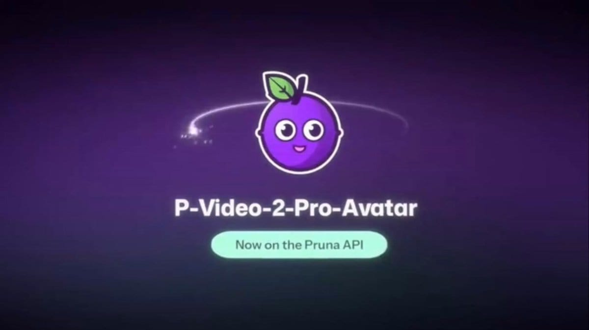

Threads｜Pruna P-Video-2-Pro-Avatar：一張人像＋聲音做口播影片，但先分清原生解析度與肖像授權

AI郵報在 Threads 分享 Pruna 的 `p-video-2-pro-avatar`：提供一張人像，再給上傳音訊或文字腳本，即可輸出有同步嘴形與表情的說話影片。它適合把產品解說、教學初稿或固定角色的口播，先做成可編輯的影片草案；但「一張照片就能拍完」不該掩蓋肖像、聲音授權、標示與成片審稿的責任。
官方文件可確認的能力與限制
Pruna 官方模型文件將它定義為以「人像首幀＋語音」生成 talking video 的端點：輸出為 24 fps MP4，長度從 1 秒至 3 分鐘。使用者須提供音訊或 `voice_script`；若兩者同時存在，**上傳音訊優先**，且音軌決定影片長度。
文件列出的基準價格如下：
| 設定 | 每秒輸出影片列價 | 60 秒換算 |
| --- | ---: | ---: |
| 480p | US$0.02 | US$1.20 |
| 768p | US$0.04 | US$2.40 |
| 1080p | US$0.06 | US$3.60 |
| 2K | US$0.08 | US$4.80 |
| 4K | US$0.12 | US$7.20 |
這些是官方文件的當次列價；實際帳單仍應以使用當下的 Pruna 入口為準。更重要的是，1080p、2K、4K 是先產生 768p、再使用 `p-video-upscale` 放大，並不是原生高解析生成；4K 的音訊上限也縮為 125 秒。
中文口播：優先用短錄音驗證，不要假設文字配音可用
官方 `voice_language` 清單有美／英式英文、西班牙文、法文、德文、義大利文、巴西葡萄牙文、日文、韓文與印地文，**未列中文**。雖然文件列出 30 種 TTS 聲音，但不代表中文文字腳本必然能得到可用的原生配音。
若目標是中文內容，較穩妥的驗證順序是：取得授權的人像與自己的短音檔、先輸出數秒、檢查嘴形、咬字、表情與背景運動，再決定是否擴大到完整腳本。這也能把重做成本留在低解析度、小片段階段。
採用前的四個檢核
- **人物與聲音有沒有授權？** 真實人物、配音者與客戶素材，都應有可追溯的使用同意；不以「只有一張照片」降低標準。
- **觀眾能否辨識合成性？** 產品介紹、教學或虛擬主播應依情境清楚標示 AI 合成／數位人，避免造成真人出鏡的誤解。
- **先測最困難的一句。** 人名、數字、術語、快速語速與情緒轉折最容易露出對嘴或表情問題；先用它們做短片驗收。
- **把輸出當初稿而非最終交付。** 核對口型、語意、品牌措辭、肖像呈現與聲音權利；必要時回到剪輯軟體補字幕、停頓與視覺素材。
來源與查核邊界
Threads 的 480p／768p 定價、3 分鐘上限、30 種聲音與 10 種語言說法，均可在 Pruna 官方模型文件找到對應資訊；中文未列於官方 TTS 語言清單，因此本文不把中文文字轉語音列為已支援能力。AI郵報的介紹提供易讀脈絡，具體功能、價格與限制以官方文件為準；實際生成品質則仍須以自己的授權素材測試。
- Threads 原始分享：https://www.threads.com/share/_q9vM4_fu/
- Threads canonical URL：https://www.threads.com/@aiposthub/post/De7IcEdgTFt
- AI郵報完整介紹：https://www.aiposthub.com/pruna-avatar-ai-news-20261025/
- Pruna 官方模型文件與價格：https://docs.api.pruna.ai/guides/models/p-video-2-pro-avatar
- Pruna 官方發布：https://x.com/PrunaAI/status/2113300788713832616